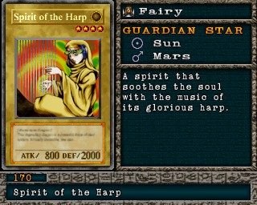

#170 · Monstro
Spirit of the Harp
ATK800
DEF2000
Nível4
TipoFada
AtributoLight
Guardian StarsSol / Marte
Senha80770678
Star Chips160
Quem dropa no Mod 13
| Duelista | Rank | Chance | Média | |
|---|---|---|---|---|
| S/A-POW | 2,44% 50/2048 | 1 em 41 duelos | ||
| S/A-TEC | 2,15% 44/2048 | 1 em 47 duelos | ||
| B/C/D | 1,61% 33/2048 | 1 em 62 duelos | ||
| S/A-POW | 1,46% 30/2048 | 1 em 68 duelos | ||
| S/A-POW | 1,46% 30/2048 | 1 em 68 duelos | ||
| S/A-TEC | 1,46% 30/2048 | 1 em 68 duelos | ||
| B/C/D | 1,32% 27/2048 | 1 em 76 duelos | ||
| B/C/D | 1,27% 26/2048 | 1 em 79 duelos | ||
| S/A-POW | 1,22% 25/2048 | 1 em 82 duelos | ||
| S/A-POW | 1,22% 25/2048 | 1 em 82 duelos | ||
| S/A-POW | 1,17% 24/2048 | 1 em 85 duelos | ||
| S/A-POW | 1,17% 24/2048 | 1 em 85 duelos | ||
| S/A-TEC | 1,17% 24/2048 | 1 em 85 duelos | ||
| B/C/D | 1,03% 21/2048 | 1 em 98 duelos | ||
| S/A-POW | 0,98% 20/2048 | 1 em 102 duelos | ||
| S/A-TEC | 0,98% 20/2048 | 1 em 102 duelos |
Quem dropa no jogo original
| Duelista | Rank | Chance | Média | |
|---|---|---|---|---|
| S/A-POW | 2,44% 50/2048 | 1 em 41 duelos | ||
| S/A-TEC | 2,15% 44/2048 | 1 em 47 duelos | ||
| B/C/D | 1,61% 33/2048 | 1 em 62 duelos | ||
| S/A-POW | 1,46% 30/2048 | 1 em 68 duelos | ||
| S/A-POW | 1,46% 30/2048 | 1 em 68 duelos | ||
| S/A-TEC | 1,46% 30/2048 | 1 em 68 duelos | ||
| B/C/D | 1,32% 27/2048 | 1 em 76 duelos | ||
| B/C/D | 1,27% 26/2048 | 1 em 79 duelos | ||
| S/A-POW | 1,22% 25/2048 | 1 em 82 duelos | ||
| S/A-POW | 1,22% 25/2048 | 1 em 82 duelos | ||
| S/A-POW | 1,17% 24/2048 | 1 em 85 duelos | ||
| S/A-POW | 1,17% 24/2048 | 1 em 85 duelos | ||
| S/A-TEC | 1,17% 24/2048 | 1 em 85 duelos | ||
| B/C/D | 1,03% 21/2048 | 1 em 98 duelos | ||
| S/A-POW | 0,98% 20/2048 | 1 em 102 duelos | ||
| S/A-TEC | 0,98% 20/2048 | 1 em 102 duelos |
A chance vale por duelo vencido com o rank indicado. "1 em N" é a média de duelos para conseguir a carta. S/A-POW = vitória por força; S/A-TEC = vitória técnica; B/C/D = ranks baixos.